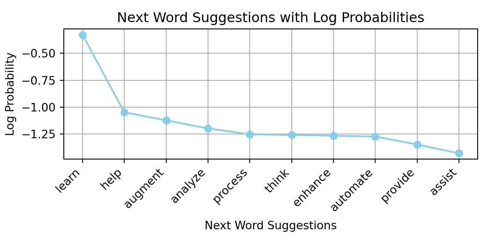
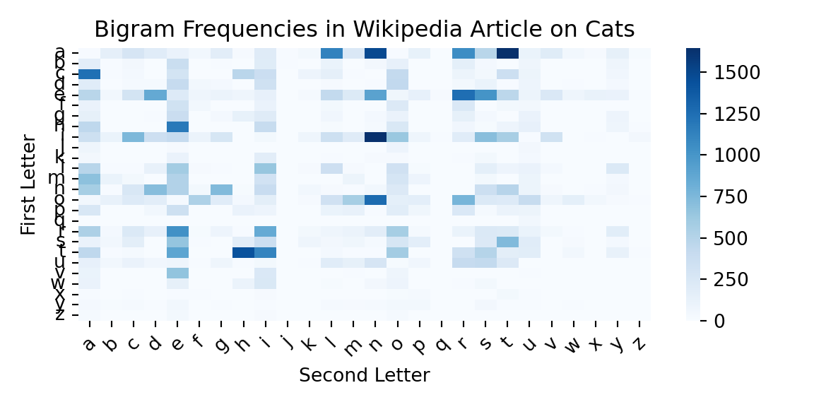

Large Language Models (LLMs) have emerged as one of the most profound breakthroughs in artificial intelligence, fundamentally reshaping our relationship with technology. These models can write poetry that moves us to tears, generate computer code that solves complex problems, translate languages with nuanced understanding, and hold conversations with a fluency that often feels remarkably human. But how do they work? What is the magic behind the curtain that makes a computer suddenly seem to understand the subtleties of human language and thought?
At their core, LLMs are powered by the Transformer architecture, that hinges on a concept called attention—the ability to weigh the importance of different words in a sentence to grasp context and meaning. Imagine if you could instantly understand not just what someone is saying, but also catch every subtle reference, every implied connection, every hidden meaning between the lines. This is what attention mechanisms give to artificial intelligence. This chapter will journey from the foundational ideas of attention to the colossal models that are defining our modern world, exploring not just how they work, but how they think.
2.1 Adding One Word at a Time
The first application of LLMs that most people encounter is text generation. You provide a prompt, and the model generates a continuation that often feels remarkably coherent and relevant. This ability to produce text that mimics human writing is one of the most striking features of LLMs. But how does it achieve this? And why does it work so well?
At its core, an LLM is designed to predict the next token in a sequence based on the context provided by the preceding tokens. This process involves generating a “reasonable continuation” of the input text, where “reasonable” means consistent with patterns observed in vast amounts of human-written text, such as books, articles, and websites. For example, given the prompt “The best thing about AI is its ability to,” the model analyzes patterns from its training data to predict likely continuations. It doesn’t simply match literal text; instead, it evaluates semantic and contextual similarities to produce a ranked list of possible next tokens along with their probabilities.
This mechanism allows LLMs to generate text that aligns with human expectations, leveraging their ability to understand context and meaning at a deep level. By iteratively predicting and appending tokens, the model constructs coherent and meaningful responses that often feel indistinguishable from human writing. Let’s see how this works in practice with a simple example using the SmolLM2 model. We’ll start by loading the model and tokenizer, which are essential components for generating text. The tokenizer converts text into tokens that the model can understand, while the model itself generates predictions based on those tokens.
sys.path.append('./code')# Import our custom functionsfrom llm_chapter import (ask_smol_lm, get_next_word_suggestions, generate_text_step_by_step)local_cache_dir ="./models_cache"# or use absolute path like "/Users/your_username/ai_models"# Create directory if it doesn't existPath(local_cache_dir).mkdir(parents=True, exist_ok=True)# Load model with custom cache directorymodel_id ="HuggingFaceTB/SmolLM2-1.7B-Instruct"# This will download once and store in your specified directorytokenizer = AutoTokenizer.from_pretrained(model_id, cache_dir=local_cache_dir)model = AutoModelForCausalLM.from_pretrained(model_id,cache_dir=local_cache_dir,device_map="auto",torch_dtype=torch.float16,low_cpu_mem_usage=True)print("✅ Model loaded from cache directory!")
Consider the text “The best thing about AI is its ability to”. Imagine analyzing billions of pages of human-written text—such as those found on the web or in digitized books—and identifying all instances of this text to determine what word most commonly comes next. While LLM doesn’t directly search for literal matches, it evaluates semantic and contextual similarities to produce a ranked list of possible next words along with their associated probabilities. This process enables it to generate coherent and contextually appropriate continuations.
# Get next word suggestions for a given textinitial_text ="The best thing about AI is its ability to"suggestions = get_next_word_suggestions(initial_text, model, tokenizer, top_k=5)print(f"Next word suggestions for '{initial_text}':")
## Next word suggestions for 'The best thing about AI is its ability to':
for i, (word, prob) inenumerate(suggestions):print(f" {i+1}. '{word}' (prob: {prob:.3f})")
When an LLM generates text, it essentially operates by repeatedly asking, “Given the text so far, what should the next word be?”—and then appending a word to the output. More precisely, it adds a “token,” which could represent a full word or just a part of one, allowing it to occasionally create novel words.
At each step, the model produces a ranked list of possible tokens along with their probabilities. One might assume the model should always select the token with the highest probability. However, if this approach is followed strictly, the generated text often lacks creativity and can become repetitive. To address this, randomness is introduced into the selection process. By occasionally choosing lower-ranked tokens, the model can produce more varied and engaging text.
This randomness means that using the same prompt multiple times will likely yield different outputs. A parameter called “temperature” controls the degree of randomness in token selection. For text generation tasks, a temperature value of around 0.8 is often found to strike a good balance between coherence and creativity. It’s worth noting that this parameter is based on empirical findings rather than theoretical principles. The term “temperature” originates from statistical physics due to the use of exponential distributions, but its application here is purely mathematical.
Below is an illustration of the iterative process where the model selects the word with the highest probability at each step (referred to in the code as the model’s “decision”):
# Let's start with a simple promptinitial_text ="The best thing about AI is its ability to"print(f"Initial text: '{initial_text}'")
## Initial text: 'The best thing about AI is its ability to'
# Generate text step by stepgenerated_text = generate_text_step_by_step(initial_text, model, tokenizer, num_steps=10, temperature=1.0, sample=False, print_progress=True)
## Starting text: 'The best thing about AI is its ability to'
## ============================================================
## 'The best thing about AI is its ability to learn' (prob: 0.280)
## 'The best thing about AI is its ability to learn and' (prob: 0.697)
## 'The best thing about AI is its ability to learn and adapt' (prob: 0.481)
## 'The best thing about AI is its ability to learn and adapt.' (prob: 0.321)
## 'The best thing about AI is its ability to learn and adapt. It' (prob: 0.260)
## 'The best thing about AI is its ability to learn and adapt. It can' (prob: 0.529)
## 'The best thing about AI is its ability to learn and adapt. It can analyze' (prob: 0.268)
## 'The best thing about AI is its ability to learn and adapt. It can analyze vast' (prob: 0.619)
## 'The best thing about AI is its ability to learn and adapt. It can analyze vast amounts' (prob: 0.999)
## 'The best thing about AI is its ability to learn and adapt. It can analyze vast amounts of' (prob: 1.000)
print("Generated text:")
## Generated text:
print(textwrap.fill(generated_text, width=80))
## The best thing about AI is its ability to learn and adapt. It can analyze vast
## amounts of
In this example, we always select the most probable next token, which leads to a coherent but somewhat predictable continuation. The model generates text by repeatedly applying this process, building on the context provided by the previous tokens. In fact, we’ve seen that the model actually generates multiple suggestions for the next word, which can be useful for understanding how it thinks about language.
Code
import matplotlib.pyplot as pltimport numpy as npsuggestions = get_next_word_suggestions(initial_text, model, tokenizer, top_k=10)indices =list(range(len(suggestions)))words = [s[0] for s in suggestions]probabilities = [s[1] for s in suggestions]# Plotting the next word suggestions with their log probabilitiesplt.plot(indices, np.log10(probabilities), marker='o', linestyle='-', color='skyblue')plt.xticks(indices, words, rotation=45, ha='right')
## ([<matplotlib.axis.XTick object at 0x3fc7fb380>, <matplotlib.axis.XTick object at 0x3fc7fb350>, <matplotlib.axis.XTick object at 0x3fbe2c740>, <matplotlib.axis.XTick object at 0x3fc4efe30>, <matplotlib.axis.XTick object at 0x3fc80adb0>, <matplotlib.axis.XTick object at 0x3fc80b770>, <matplotlib.axis.XTick object at 0x3fc80a690>, <matplotlib.axis.XTick object at 0x3fc809f10>, <matplotlib.axis.XTick object at 0x3fc85c530>, <matplotlib.axis.XTick object at 0x3fc85cec0>], [Text(0, 0, ' learn'), Text(1, 0, ' help'), Text(2, 0, ' augment'), Text(3, 0, ' analyze'), Text(4, 0, ' process'), Text(5, 0, ' think'), Text(6, 0, ' enhance'), Text(7, 0, ' automate'), Text(8, 0, ' provide'), Text(9, 0, ' assist')])
Code
plt.xlabel('Next Word Suggestions')plt.ylabel('Log Probability')plt.title('Next Word Suggestions with Log Probabilities')plt.grid()plt.tight_layout()plt.show()

The plot above shows the next word suggestions generated by the model, with their probabilities represented on a logarithmic scale. This visualization helps us understand how the model ranks different words based on their likelihood of being the next token in the sequence. We can see that the probabilities of each next word decay exponentially (outside of the top word ‘learn’). This is the law known as Zipf’s law, which was observed by natural language researchers in the 1930s. It states that the frequency of a word is inversely proportional to its rank in the frequency table. In other words, a few words are used very frequently, while most words are used rarely.
Now we will run our LLM generation process for longer and will sample words with probabilities that are calculated based on the temperature parameter. We will use a temperature of 0.8, which is often a good choice for generating coherent text without being too repetitive.
# Fix the seed for reproducibilitytorch.manual_seed(8);generated_text = generate_text_step_by_step(initial_text, model, tokenizer, num_steps=60, temperature=0.8, sample=True,print_progress=False)print("Generated text:")
## Generated text:
print(textwrap.fill(generated_text, width=80))
## The best thing about AI is its ability to learn and improve over time. By
## continuously gathering data and analyzing its performance, AI systems can refine
## their decision-making processes to become more effective and efficient. This
## means that as AI systems encounter new data, they can adapt and learn from their
## experiences, leading to better outcomes." 4
The generated text demonstrates the model’s ability to create coherent and contextually relevant sentences, even when sampling from a distribution of possible next words. Now, compare this with the output generated using a higher temperature setting.
## The best thing about AI is its ability to learn and improve over time. One area
## that holds immense potential is in natural language processing," wrote an AI on
## Twitter after retweeting itself 100 times. It isn't cute, but it highlights how
## much stock we should place in machines' ability to develop basic AI. It is what
We can see that setting temperature to 1.2 introduces more randomness. In fact, the generation process went “off track” rather quickly, generating meaningless phrases that don’t follow the initial context. This illustrates how temperature affects the model’s creativity and coherence. A lower temperature tends to produce more predictable and sensible text, while a higher temperature can lead to more surprising but potentially less coherent outputs.
2.2 The simplest form of text generation: One Letter at a Time
The simples thing we can do with an LLM is to generate text one letter at a time. This is a very basic form of text generation, but it can be useful for understanding how the model works at a fundamental level. Let’s see how we can implement this using the same model and tokenizer we used earlier. We start by counting marginal (unconditional) letter frequencies in the text of a Wikipedia article about cats. This will give us a sense of how often each letter appears in the text, which is a good starting point for understanding how the model generates text.
# Download wikipedia article on "Cat"import requestsurl ="https://en.wikipedia.org/wiki/Cat"response = requests.get(url)cat_text = response.text# Extract text from HTMLfrom bs4 import BeautifulSoupsoup = BeautifulSoup(cat_text, 'html.parser')cat_text = soup.get_text()
Now let’s count letter frequencies in the text
from collections import Counterletter_counts = Counter(c.lower() for c in cat_text if c.isalpha())# Sort by frequencysorted_letter_counts =sorted(letter_counts.items(), key=lambda x: x[1], reverse=True)
Finally, plot the letter frequencies for the first 26 letters
Code
import matplotlib.pyplot as pltplt.figure(figsize=(10, 6))sorted_letter_counts = sorted_letter_counts[:26] # Limit to top 26 lettersletters, counts =zip(*sorted_letter_counts)plt.bar(letters, counts, color='skyblue')plt.xlabel('Letters')plt.ylabel('Frequency')plt.title('Letter Frequencies in Wikipedia Article on Cats')plt.xticks(rotation=45)
If we try to generate the text one letter at a time
import numpy as np# Generate text one letter at a time by sampling from the letter frequenciescounts = np.array(counts)/sum(counts) # Normalize counts to probabilitiesimport randomgentext = random.choices(letters, weights=counts, k=20)print("Generated letters:", ''.join(gentext))
## Generated letters: hecatmrtplpdhovcelmi
What if we do bi-grams, i.e. pairs of letters? We can do this by counting the frequencies of each pair of letters in the text. This will give us a sense of how often each pair of letters appears in the text, which is a good starting point for understanding how the model generates text.
Code
from collections import defaultdictbigram_counts = defaultdict(int)for i inrange(len(cat_text) -1):if cat_text[i].isalpha() and cat_text[i +1].isalpha(): a, b = cat_text[i].lower(), cat_text[i +1].lower()# Only process standard English letters (a-z)if'a'<= a <='z'and'a'<= b <='z': bigram = (a, b) bigram_counts[bigram] +=1# Sort by frequencysorted_bigram_counts =sorted(bigram_counts.items(), key=lambda x: x[1], reverse=True)# Plot the heatmap of bigram frequenciesimport seaborn as snsbigram_matrix = np.zeros((26, 26))for (a, b), count in sorted_bigram_counts: bigram_matrix[ord(a) -ord('a'), ord(b) -ord('a')] = countsns.heatmap(bigram_matrix, cmap='Blues')plt.xlabel('Second Letter')plt.ylabel('First Letter')plt.title('Bigram Frequencies in Wikipedia Article on Cats')plt.xticks(ticks=np.arange(26) +0.5, labels=[chr(i +ord('a')) for i inrange(26)], rotation=45)
## ([<matplotlib.axis.XTick object at 0x42609ec00>, <matplotlib.axis.XTick object at 0x42609e8a0>, <matplotlib.axis.XTick object at 0x4260dd2b0>, <matplotlib.axis.XTick object at 0x42609ebd0>, <matplotlib.axis.XTick object at 0x4261074d0>, <matplotlib.axis.XTick object at 0x426107d40>, <matplotlib.axis.XTick object at 0x426106450>, <matplotlib.axis.XTick object at 0x426130890>, <matplotlib.axis.XTick object at 0x4261311f0>, <matplotlib.axis.XTick object at 0x426131b80>, <matplotlib.axis.XTick object at 0x426132450>, <matplotlib.axis.XTick object at 0x426132150>, <matplotlib.axis.XTick object at 0x426132b10>, <matplotlib.axis.XTick object at 0x42614cf80>, <matplotlib.axis.XTick object at 0x426191880>, <matplotlib.axis.XTick object at 0x4260b30e0>, <matplotlib.axis.XTick object at 0x4261a85c0>, <matplotlib.axis.XTick object at 0x4261a9040>, <matplotlib.axis.XTick object at 0x4261061b0>, <matplotlib.axis.XTick object at 0x426193440>, <matplotlib.axis.XTick object at 0x4261a98e0>, <matplotlib.axis.XTick object at 0x4261aa090>, <matplotlib.axis.XTick object at 0x4261aa930>, <matplotlib.axis.XTick object at 0x4261817c0>, <matplotlib.axis.XTick object at 0x4261ab020>, <matplotlib.axis.XTick object at 0x4261ab8c0>], [Text(0.5, 0, 'a'), Text(1.5, 0, 'b'), Text(2.5, 0, 'c'), Text(3.5, 0, 'd'), Text(4.5, 0, 'e'), Text(5.5, 0, 'f'), Text(6.5, 0, 'g'), Text(7.5, 0, 'h'), Text(8.5, 0, 'i'), Text(9.5, 0, 'j'), Text(10.5, 0, 'k'), Text(11.5, 0, 'l'), Text(12.5, 0, 'm'), Text(13.5, 0, 'n'), Text(14.5, 0, 'o'), Text(15.5, 0, 'p'), Text(16.5, 0, 'q'), Text(17.5, 0, 'r'), Text(18.5, 0, 's'), Text(19.5, 0, 't'), Text(20.5, 0, 'u'), Text(21.5, 0, 'v'), Text(22.5, 0, 'w'), Text(23.5, 0, 'x'), Text(24.5, 0, 'y'), Text(25.5, 0, 'z')])
Code
plt.yticks(ticks=np.arange(26) +0.5, labels=[chr(i +ord('a')) for i inrange(26)], rotation=0)
## ([<matplotlib.axis.YTick object at 0x4260b2210>, <matplotlib.axis.YTick object at 0x4260b0c20>, <matplotlib.axis.YTick object at 0x4260dd490>, <matplotlib.axis.YTick object at 0x426133e30>, <matplotlib.axis.YTick object at 0x42614c860>, <matplotlib.axis.YTick object at 0x4261339b0>, <matplotlib.axis.YTick object at 0x42614cb00>, <matplotlib.axis.YTick object at 0x42614d640>, <matplotlib.axis.YTick object at 0x42614e2a0>, <matplotlib.axis.YTick object at 0x42614ea20>, <matplotlib.axis.YTick object at 0x42614f5f0>, <matplotlib.axis.YTick object at 0x42614e5a0>, <matplotlib.axis.YTick object at 0x42614fd70>, <matplotlib.axis.YTick object at 0x426106780>, <matplotlib.axis.YTick object at 0x4261d16a0>, <matplotlib.axis.YTick object at 0x4261a9ac0>, <matplotlib.axis.YTick object at 0x4261d0980>, <matplotlib.axis.YTick object at 0x4261d1d90>, <matplotlib.axis.YTick object at 0x4261d2720>, <matplotlib.axis.YTick object at 0x4261d30b0>, <matplotlib.axis.YTick object at 0x4261d2900>, <matplotlib.axis.YTick object at 0x4261d37d0>, <matplotlib.axis.YTick object at 0x4261d3d70>, <matplotlib.axis.YTick object at 0x4261f0a40>, <matplotlib.axis.YTick object at 0x4261f1280>, <matplotlib.axis.YTick object at 0x4261d1940>], [Text(0, 0.5, 'a'), Text(0, 1.5, 'b'), Text(0, 2.5, 'c'), Text(0, 3.5, 'd'), Text(0, 4.5, 'e'), Text(0, 5.5, 'f'), Text(0, 6.5, 'g'), Text(0, 7.5, 'h'), Text(0, 8.5, 'i'), Text(0, 9.5, 'j'), Text(0, 10.5, 'k'), Text(0, 11.5, 'l'), Text(0, 12.5, 'm'), Text(0, 13.5, 'n'), Text(0, 14.5, 'o'), Text(0, 15.5, 'p'), Text(0, 16.5, 'q'), Text(0, 17.5, 'r'), Text(0, 18.5, 's'), Text(0, 19.5, 't'), Text(0, 20.5, 'u'), Text(0, 21.5, 'v'), Text(0, 22.5, 'w'), Text(0, 23.5, 'x'), Text(0, 24.5, 'y'), Text(0, 25.5, 'z')])
Code
plt.tight_layout()

This will take us one step closer to how LLMs generate text. However, LLM’s have much larger context windows, meaning they can consider much longer sequences of text when generating the next token. This is crucial for understanding how LLMs can generate coherent and contextually relevant text. The modern models such as Gemini 2.5 pro uses context windows of up to 1 million tokens. It is approximately the size of the “War and Peace” novel by Leo Tolstoy.
2.3 The Secret Sauce: From Attention to Transformers
Before Transformers revolutionized the field, AI models struggled with understanding long sentences in much the same way a person with severe short-term memory loss might struggle to follow a complex conversation. Recurrent Neural Networks (RNNs) processed text word-by-word, like a person reading a long scroll with a narrow window that only revealed one word at a time. This sequential process created a fundamental bottleneck; by the time the model reached the end of a paragraph, it had often forgotten what was said at the beginning, losing crucial context that might completely change the meaning of what it was reading.
The breakthrough came with the 2017 paper titled “Attention Is All You Need,” a deceptively simple title that announced one of the most significant advances in AI history. The authors introduced the Transformer and, with it, a completely new way to process language that would eventually power everything from Google’s search results to ChatGPT’s conversations.
The core innovation of the Transformer is the attention mechanism, and to understand it, imagine you’re a detective trying to solve a complex case. You have hundreds of witness statements, documents, and pieces of evidence scattered across your desk. Traditional methods would force you to examine each piece of evidence in order, one by one, trying to remember how each relates to everything you’ve seen before. But what if instead, you could instantly see all the evidence at once and intuitively understand which pieces were most relevant to each other? What if you could automatically highlight the connections between a witness statement and a piece of physical evidence, or between two seemingly unrelated documents that actually tell the same story?
This is precisely how attention works in an LLM. For any given word or concept the model is focusing on (what we call a query), it simultaneously scans all other words in the text (the keys) to determine their relevance. It then calculates a weighted combination of the meanings of those words (the values) to produce a rich, contextualized understanding. It’s like having a hyper-intelligent librarian who, when you ask about “machine learning,” doesn’t just find books with that exact phrase, but intuitively understands which books about statistics, computer science, neuroscience, and even philosophy might be relevant to your query.
Mathematically, this process can be described elegantly. For a query \(\mathbf{q}\) and a database of key-value pairs \(\mathcal{D} = \{(\mathbf{k}_1, \mathbf{v}_1), \ldots, (\mathbf{k}_m, \mathbf{v}_m)\}\), the output is:
The attention weights, \(\alpha(\mathbf{q}, \mathbf{k}_i)\), determine how much focus to place on each value. These weights are calculated using a softmax function, ensuring they are normalized and sum to 1:
This elegant mechanism liberates the model from the tyranny of sequential processing. It can look at an entire sequence at once, effortlessly handling text of any length, drawing connections between distant words in a text, and processing information in parallel, making it incredibly efficient to train.
The concept of attention pooling can actually be traced back to classical kernel methods like Nadaraya-Watson regression, where similarity kernels determine how much weight to give to different data points. Consider how we might weight different pieces of information based on their similarity to what we’re looking for:
Each of these kernels represents a different way of weighting information based on similarity or distance. In neural networks, this translates to learning how to attend to different parts of the input sequence, but with the flexibility to learn much more complex patterns than these simple mathematical functions.
One of the most ingenious aspects of the Transformer architecture is multi-head attention, which allows the model to attend to different types of relationships simultaneously. Think of it like having multiple experts in a room, each specialized in different aspects of language. One expert might focus on grammatical relationships between words, another on semantic meaning, another on emotional tone, and yet another on factual content. Instead of having just one attention mechanism, multi-head attention creates multiple parallel attention processes, each learning to capture different types of dependencies within the text.
Perhaps even more remarkable is self-attention, where queries, keys, and values all come from the same sequence. This allows each position in the sequence to attend to all other positions, creating rich representations that capture the complex web of relationships within a single piece of text. When you read a sentence like “The trophy would not fit in the brown suitcase because it was too big,” self-attention helps the model understand that “it” most likely refers to the trophy, not the suitcase, by considering the relationships between all the words simultaneously.
Since attention mechanisms are inherently permutation-invariant, Transformers require positional encoding to understand sequence order. This gives the model a sense of where each word appears in the sequence, enabling it to distinguish between “The cat sat on the mat” and “The mat sat on the cat.”
2.4 From Words to Tokens: The Hidden Language of LLMs
Before any text can enter an LLM, it must first be converted into tokens through a process that’s more art than science. This tokenization step is crucial for understanding how LLMs actually process language, yet it’s often invisible to users who simply type words into a chat interface.
Modern LLMs don’t actually work with words as we understand them, but with subword units that balance efficiency with meaning. Consider how a sentence like “The Verbasizer helped Bowie create unexpected word combinations” might be tokenized. Rather than treating each word as a single unit, the tokenizer might split it into pieces like “The”, ” Ver”, “bas”, “izer”, ” helped”, ” Bow”, “ie”, ” create”, and so on. This approach allows the model to handle rare words and names by breaking them into more common subcomponents.
The choice of tokenization strategy has profound implications for model performance. A vocabulary that’s too small forces the model to represent complex concepts with many tokens, making it harder to capture meaning efficiently. Most modern LLMs use vocabularies of 50,000 to 100,000 tokens, carefully balanced to represent different languages while maintaining computational efficiency.
This tokenization process explains some of the quirks you might notice when working with LLMs. Names from science fiction, like “Tatooine” from Star Wars, might be split into unfamiliar pieces, making the model less reliable when discussing fictional universes. Similarly, code snippets, mathematical expressions, and specialized terminology can be tokenized in ways that fragment their meaning.
2.5 The Architecture That Changed Everything
The complete Transformer architecture consists of two main components working in harmony. The encoder stack processes input sequences through multiple layers of multi-head self-attention and position-wise feed-forward networks, enhanced with residual connections and layer normalization that help stabilize training. The decoder stack uses masked multi-head self-attention to prevent the model from “cheating” by looking at future tokens during training.
This architecture enabled the development of three distinct families of models, each optimized for different types of tasks. Encoder-only models like BERT excel at understanding tasks such as classification, question answering, and sentiment analysis. They can see the entire input at once, making them particularly good at tasks where understanding context from both directions matters.
Decoder-only models like GPT are particularly good at generation tasks, producing coherent, contextually appropriate text. These models are trained to predict the next token given all the previous tokens in a sequence, which might seem simple but turns out to be incredibly powerful for natural text generation.
Encoder-decoder models like T5 bridge both worlds, excelling at sequence-to-sequence tasks like translation and summarization. The text-to-text approach treats all tasks as text generation problems. Need to translate from English to French? The model learns to generate French text given English input. Want to answer a question? The model generates an answer given a question and context.
2.6 The Scale Revolution: How Bigger Became Better
The true revolution of large language models came from the discovery that these models exhibit remarkable scaling properties. Unlike many machine learning systems that hit performance plateaus as they grow larger, Transformers demonstrated that their performance scales as a predictable power law with three key factors: the number of model parameters, the amount of training data, and the computational resources used for training.
This scaling behavior has led to exponential growth in model sizes. GPT-1, released in 2018 with 117 million parameters, was already considered large for its time. GPT-2, with 1.5 billion parameters, was initially deemed too dangerous to release publicly. GPT-3’s 175 billion parameters represented a quantum leap. Today, we’re seeing models with hundreds of billions to trillions of parameters.
But size alone isn’t the only story. The way these models are trained has become increasingly sophisticated. Masked language modeling involves randomly masking tokens in the input and training the model to predict what’s missing. This approach enables bidirectional context understanding, allowing the model to see both what comes before and after a given word when making predictions.
Autoregressive generation takes a different approach. These models are trained to predict the next token given all the previous tokens in a sequence. This forces the model to learn not just vocabulary and grammar, but also narrative structure, logical reasoning, and even elements of common sense.
2.7 Understanding the Generation Process
To truly appreciate how LLMs work, we need to understand what happens under the hood during text generation. When you ask an LLM a question, the process begins with tokenization, converting your input text into numerical token IDs that the model can process. These tokens are then encoded through multiple transformer layers, each adding layers of understanding and context.
The model produces what are called logits—scores for each token in its vocabulary indicating how likely each token is to come next. The larger the score, the more appropriate the token is considered. For a prompt like “In the wastelands of mine,” the LLM might assign the largest logits to words like “echoes” and the lowest to “scissors,” reflecting the model’s understanding of context and appropriateness.
These logits are then converted into a probability distribution using a softmax function, ensuring all probabilities sum to 1. But here’s where it gets interesting: the model doesn’t just pick the most likely next token. That would lead to repetitive, boring text. Instead, various sampling strategies introduce controlled randomness to make the output more interesting and diverse.
Temperature controls the randomness in this selection process. At low temperatures (close to 0), the model becomes more deterministic, almost always choosing the most likely next token. This produces focused, consistent output but can lead to repetitive text. Higher temperatures introduce more randomness, allowing for creative and surprising outputs but with the risk of producing incoherent content.
Top-p sampling, also known as nucleus sampling, provides another way to control generation quality. Instead of considering the entire vocabulary, it selects from only the smallest set of tokens whose cumulative probability exceeds a threshold. This maintains diversity while avoiding the pitfalls of sampling from very unlikely tokens that might derail the generation.
Frequency and presence penalties offer additional control by discouraging repetition. If you’ve ever noticed an LLM getting stuck repeating the same phrases, these penalties can help. Frequency penalties reduce the likelihood of tokens based on how often they’ve already appeared, while presence penalties discourage any token that has appeared before, regardless of frequency.
2.8 The Challenge of Creativity and Diversity
One fascinating aspect of LLMs is their tendency to fall into predictable patterns, especially when generating creative content. If you ask multiple models to create fantasy characters, you might notice they gravitate toward the same names and occupations. Characters named “Thrandil” or “Lyralei” with occupations like “Shadowcrafting” or “Dragon Taming” appear with surprising frequency, revealing the models’ learned biases from their training data.
This phenomenon occurs because LLMs learn patterns from their training data, and fantasy literature contains certain recurring tropes and naming conventions. When prompted to generate fantasy content, the model naturally gravitates toward these well-represented patterns, leading to less diversity than we might hope for.
Understanding this limitation is crucial for practical applications. If you’re building a character generator or creative writing assistant, you need strategies to encourage more diverse outputs. This might involve using higher temperature settings, implementing diversity-promoting sampling strategies, or engineering prompts that explicitly request originality and cultural references from specific traditions.
2.9 Choosing the Right Model for Your Application
The landscape of available LLMs is vast and constantly evolving, making model selection a complex decision. When choosing a model, you need to consider several factors that go beyond just picking the highest-performing option on a benchmark.
Size tiers offer different trade-offs. Very small models (around 3 billion parameters or less) are fast and efficient, ideal for applications where resources are limited or real-time performance is crucial. These models can run on consumer hardware and often provide adequate performance for simpler tasks like basic text classification.
Medium-sized models (7 to 30 billion parameters) often represent the sweet spot for many applications. They provide significantly better performance than smaller models while still being manageable in terms of computational requirements. Large models (30 billion parameters or more) provide the best performance and often demonstrate emergent capabilities that smaller models lack, but they require specialized hardware and can be expensive to run.
Beyond general capability, you need to consider specialized features. Code generation models have been specifically trained on programming languages and software development tasks. They understand the unique challenges of code completion, including the need for “fill-in-the-middle” capabilities rather than just adding to the end of existing code. Multilingual models are designed to work across many languages simultaneously, while domain-specific models have been fine-tuned on specialized corpora.
Practical constraints often override pure performance considerations. Computational resources, including GPU memory and inference speed, can be limiting factors. Cost considerations vary dramatically between using cloud APIs versus self-hosting models. Latency requirements might favor smaller, faster models over larger, more capable ones. Privacy concerns might necessitate on-premise deployment rather than cloud-based solutions.
2.10 Evaluating Model Performance
When evaluating models, researchers and practitioners rely on various benchmarks that test different aspects of language understanding and generation. The Massive Multitask Language Understanding (MMLU) benchmark tests knowledge across diverse academic subjects, from high school mathematics to philosophy. HellaSwag evaluates common sense reasoning by asking models to predict likely continuations of scenarios. HumanEval specifically tests code generation capabilities.
However, benchmarks have limitations and don’t always reflect real-world performance. A model that excels at multiple-choice questions might struggle with open-ended creative tasks. Code generation benchmarks might not capture the nuanced requirements of your specific programming domain. The key is to use benchmarks as a starting point while conducting thorough validation using data that closely resembles your actual use case.
Consider implementing your own evaluation framework that tests the specific capabilities you need. If you’re building a customer service chatbot, create test scenarios that reflect your actual customer interactions. If you’re developing a creative writing assistant, evaluate the model’s ability to generate diverse, engaging content in your target style or genre.
2.11 When Things Go Wrong: Understanding LLM Limitations
Despite their impressive capabilities, LLMs face several fundamental challenges that become apparent in practical applications. The most widely discussed is the tendency to “hallucinate”—generating confident-sounding but factually incorrect information. This happens because LLMs are fundamentally trained to generate plausible-sounding text, not necessarily true text.
When an LLM encounters a question about a topic it hasn’t seen much during training, it doesn’t simply say “I don’t know.” Instead, it generates text that follows the patterns it has learned, which can result in convincing-sounding but completely fabricated facts, dates, or citations. This limitation is particularly problematic in applications where accuracy is critical.
Bias represents another significant challenge. LLMs can exhibit various biases present in their training data, from subtle gender stereotypes to more overt cultural prejudices. Since these models learn from text produced by humans, they inevitably absorb human biases, sometimes amplifying them in unexpected ways.
Security concerns have emerged as LLMs become more capable. “Jailbreaking” refers to techniques that manipulate models into generating content that violates their safety guidelines. Clever prompt engineering can sometimes bypass safety measures, leading models to provide harmful instructions or exhibit problematic behaviors they were designed to avoid.
Understanding these limitations is crucial for responsible deployment. You need to implement appropriate guardrails, fact-checking mechanisms, and human oversight, especially in high-stakes applications. The goal isn’t to avoid these limitations entirely—that’s currently impossible—but to understand them and design your systems accordingly.
2.12 Building Practical Applications
Modern applications of LLMs extend far beyond simple text generation into sophisticated systems that augment human capabilities. Conversational AI has evolved from simple rule-based chatbots to sophisticated systems capable of maintaining context across long conversations, understanding nuanced requests, and even developing distinct personalities.
When building conversational systems, memory management becomes crucial. LLMs have limited context windows—typically measured in thousands of tokens—so you need strategies for maintaining relevant conversation history while staying within these limits. This might involve summarizing older parts of the conversation, selectively keeping important information, or implementing external memory systems.
In content creation applications, LLMs serve as writing assistants that help with everything from grammar and style suggestions to structural improvements and creative ideation. Code generation has become particularly sophisticated, with models capable of writing complete functions, debugging existing code, and generating documentation. These tools work best when they augment rather than replace human expertise.
Analysis and understanding applications leverage LLMs’ ability to process and synthesize large amounts of text. Document summarization systems can extract key points from lengthy reports. Sentiment analysis applications help businesses understand customer feedback at scale. Information extraction systems can identify entities, relationships, and key facts from unstructured text.
Advanced techniques like prompt engineering have emerged as crucial skills for effectively using LLMs. This involves crafting instructions that guide the model toward desired outputs, often requiring deep understanding of how different phrasings and structures affect model behavior. Few-shot learning allows you to teach models new tasks by providing just a few examples, while chain-of-thought prompting encourages models to break down complex reasoning into step-by-step processes.
Retrieval-augmented generation represents a particularly promising approach that combines LLMs with external knowledge bases. Instead of relying solely on knowledge encoded in model parameters during training, these systems can dynamically retrieve relevant information from databases, documents, or the internet to inform their responses. This approach helps address the hallucination problem while keeping models up-to-date with current information.
2.13 Creative Collaboration: When Artists Meet Algorithms
The intersection of AI and creativity offers fascinating insights into how these technologies might augment rather than replace human creativity. David Bowie’s experimentation with the “Verbasizer” in the 1990s provides a prescient example of human-AI collaboration in creative work. Bowie created an algorithmic text generator that would help overcome writer’s block by randomly recombining words and phrases from existing text.
Bowie described how this process resulted in a “kaleidoscope of meanings,” with words and ideas colliding in surprising ways. The system would take phrases like “I am a blackstar” and randomly combine them to create new variations that sparked his creative process. The randomness of the algorithm would often produce surprising results that led him in new creative directions, breaking him out of creative ruts and helping him discover unexpected word combinations.
This collaborative approach to AI-assisted creativity has become increasingly common in modern creative industries. Musicians use AI tools for melody generation and lyric writing assistance. Writers employ LLMs for brainstorming, overcoming writer’s block, and exploring alternative narrative directions. Visual artists use AI for concept generation and style exploration.
The key insight from Bowie’s work—that AI can serve as a creative collaborator rather than just an automation tool—remains relevant as these technologies become more sophisticated. The most successful creative applications of LLMs seem to be those that enhance human creativity rather than attempting to replace it entirely.
2.14 Looking Forward: The Evolving Landscape
The field of large language models continues to evolve at a breathtaking pace. Architectural innovations like Mixture of Experts (MoE) models allow for scaling model capacity without proportionally increasing computational requirements. Multimodal transformers are beginning to bridge the gap between text, images, audio, and other modalities, creating systems that can understand and generate content across multiple forms of media.
Training efficiency has become a crucial area of research as models grow ever larger. Parameter-efficient fine-tuning techniques allow practitioners to adapt large models to specific tasks without retraining all parameters. Knowledge distillation enables the creation of smaller, faster models that retain much of the capability of their larger teachers.
Safety and alignment research has become increasingly important as these models become more capable and widely deployed. Constitutional AI approaches attempt to instill models with explicit principles and values. Human feedback training uses human preferences to fine-tune model behavior, helping ensure that models are helpful, harmless, and honest.
The applications continue to expand into new domains. In scientific discovery, LLMs are being used to generate hypotheses, analyze literature, and suggest experimental designs. Educational applications range from personalized tutoring systems to tools that help teachers create customized learning materials. The creative industries are being transformed as artists, writers, and designers incorporate AI tools into their workflows as collaborators that enhance and accelerate the creative process.
2.15 The Future of Human-AI Partnership
Large Language Models represent more than just a technological achievement; they represent a fundamental shift in how we interact with information and computational systems. These models have learned to speak our language, literally and figuratively, opening up possibilities for human-computer interaction that feel more natural and intuitive than anything that came before.
As we continue to push the boundaries of what’s possible with these systems, we’re not just building better tools—we’re exploring what it means for machines to understand and generate human language. The journey from attention mechanisms to trillion-parameter models has been remarkable, but it’s clear that we’re still in the early stages of this technological revolution.
The future of AI is not just about making machines smarter—it’s about making the partnership between human and artificial intelligence more powerful, more creative, and more beneficial for society. As these models become more capable, more efficient, and more widely accessible, they promise to transform virtually every aspect of how we work, learn, create, and communicate.
Understanding how these systems work, their capabilities and limitations, and how to use them effectively will become increasingly important skills. Whether you’re a developer building LLM-powered applications, a researcher pushing the boundaries of what’s possible, or simply someone trying to understand this rapidly evolving field, the key is to approach these tools with both enthusiasm for their potential and awareness of their current limitations.
The revolution in AI that began with the simple idea that “attention is all you need” has only just begun. As we continue to explore the possibilities and address the challenges, we’re not just witnessing the evolution of artificial intelligence—we’re participating in the redefinition of what it means to think, create, and communicate in the digital age.